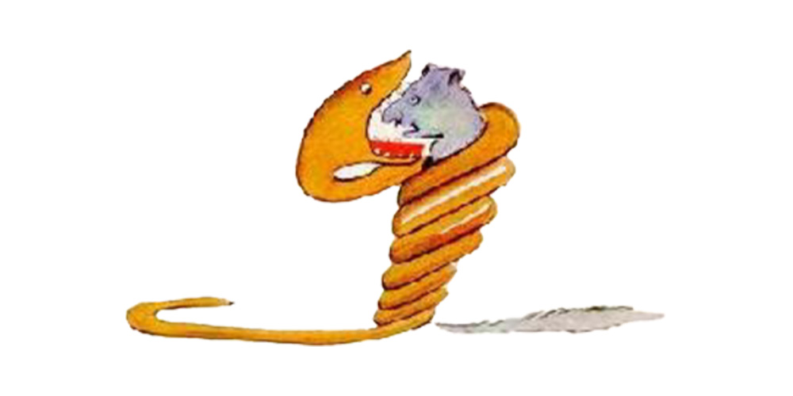
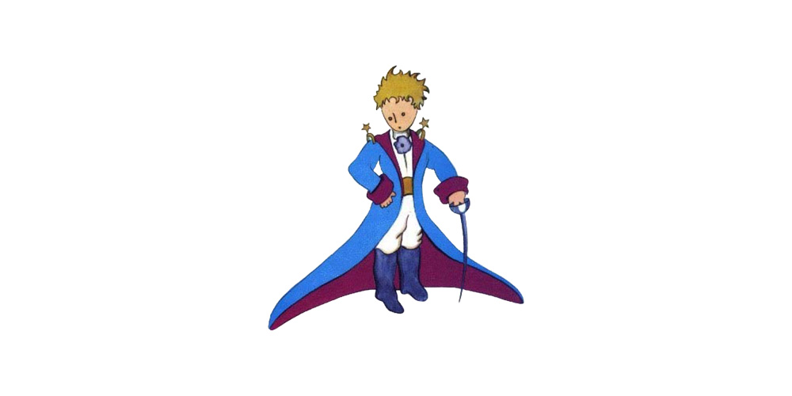
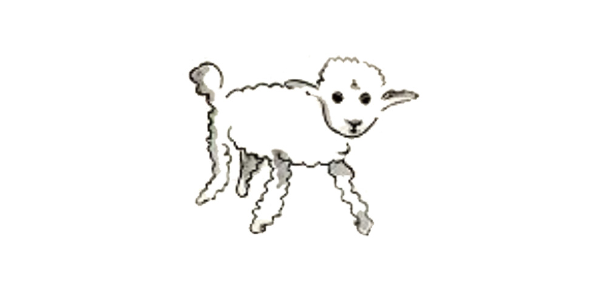
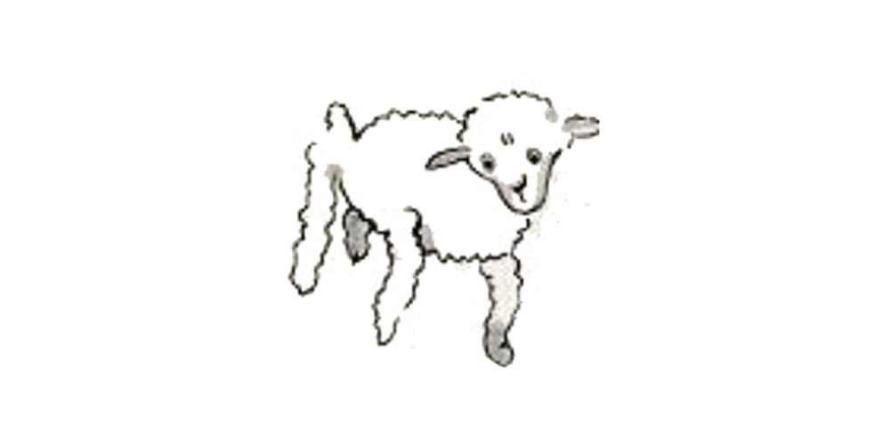
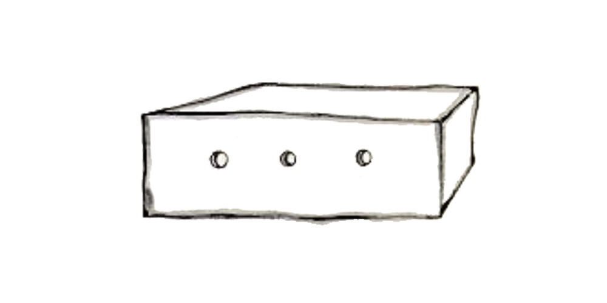
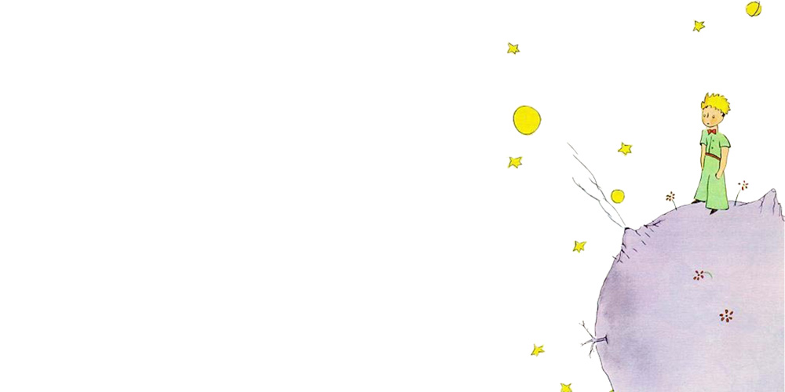
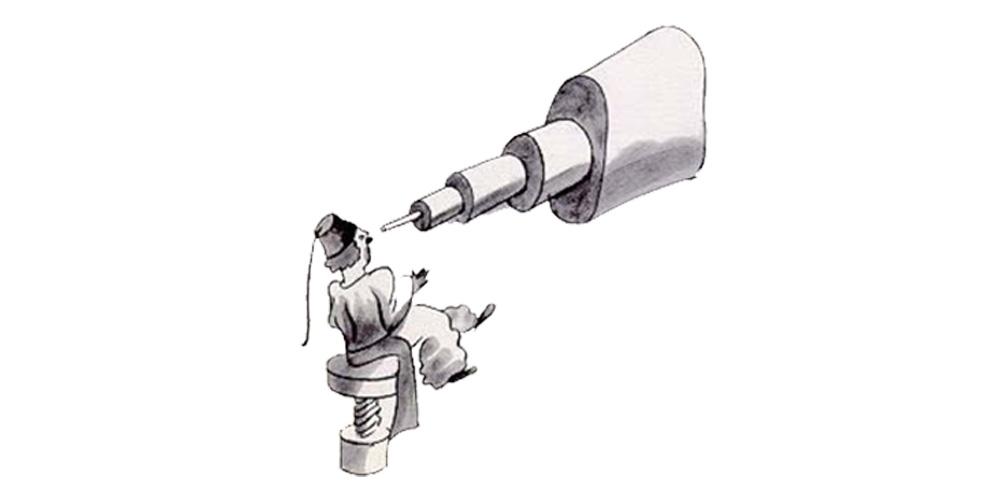
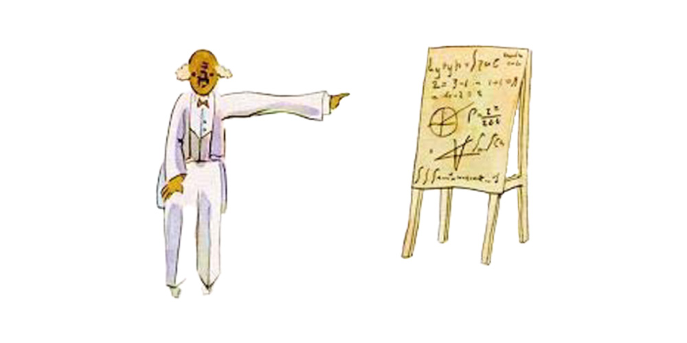
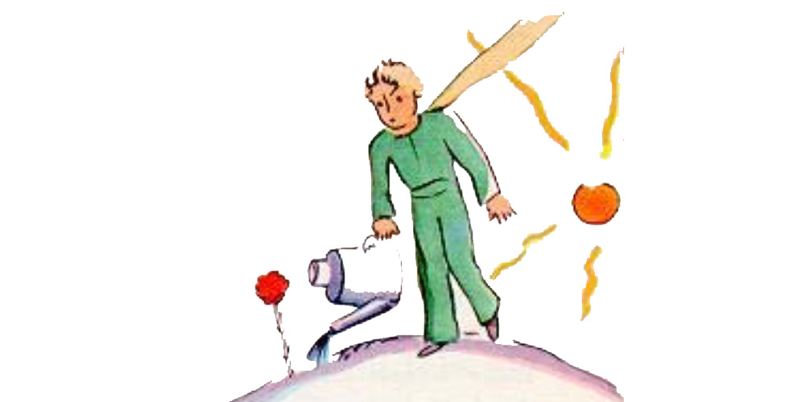
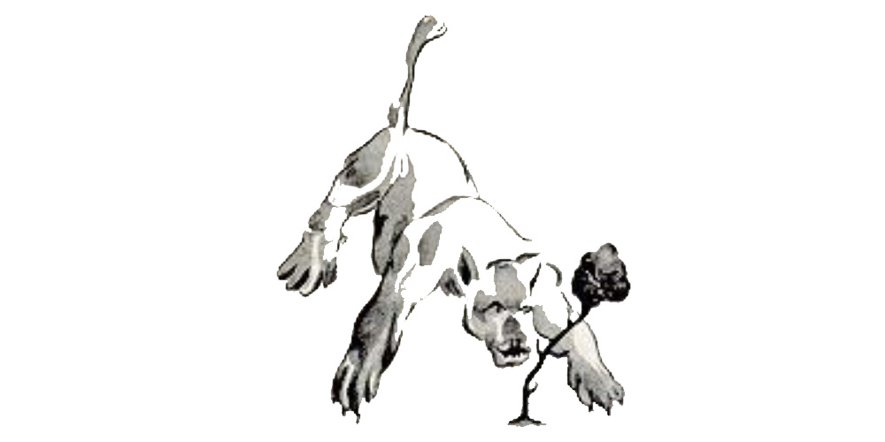

The Little Prince
Written and illustrated by Antoine de Saint Exupéry
Translated from the French by Katherine Woods
Dedication

To Leon Werth
I ask the indulgence of the children who may read this book for dedicating it to a grown−up. I have a serious reason: he is the best friend I have in the world. I have another reason: this grown−up understands everything, even books about children. I have a third reason: he lives in France where he is hungry and cold. He needs cheering up. If all these reasons are not enough, I will dedicate the book to the child from whom this grown−up grew. All grown−ups were once children−− although few of them remember it. And so I correct my dedication:
To Leon Werth
when he was a little boy
Chapter 1

Once when I was six years old I saw a magnificent picture in a book, called True Stories from Nature, about the primeval forest. It was a picture of a boa constrictor in the act of swallowing an animal. Here is a copy of the drawing.
In the book it said: "Boa constrictors swallow their prey whole, without chewing it. After that they are not able to move, and they sleep through the six months that they need for digestion."
I pondered deeply, then, over the adventures of the jungle. And after some work with a colored pencil I succeeded in making my first drawing. My Drawing Number One. It looked like this:

I showed my masterpiece to the grown−ups, and asked them whether the drawing frightened them.
But they answered: "Frighten? Why should any one be frightened by a hat?"
My drawing was not a picture of a hat. It was a picture of a boa constrictor digesting an elephant. But since the grown−ups were not able to understand it, I made another drawing: I drew the inside of the boa constrictor, so that the grown−ups could see it clearly. They always need to have things explained. My Drawing Number Two looked like this:

The grown−ups' response, this time, was to advise me to lay aside my drawings of boa constrictors, whether from the inside or the outside, and devote myself instead to geography, history, arithmetic and grammar. That is why, at the age of six, I gave up what might have been a magnificent career as a painter. I had been disheartened by the failure of my Drawing Number One and my Drawing Number Two. Grown−ups never understand anything by themselves, and it is tiresome for children to be always and forever explaining things to them.
So then I chose another profession, and learned to pilot airplanes. I have flown a little over all parts of the world; and it is true that geography has been very useful to me. At a glance I can distinguish China from Arizona. If one gets lost in the night, such knowledge is valuable.
In the course of this life I have had a great many encounters with a great many people who have been concerned with matters of consequence. I have lived a great deal among grown−ups. I have seen them intimately, close at hand. And that hasn't much improved my opinion of them.
Whenever I met one of them who seemed to me at all clear−sighted, I tried the experiment of showing him my Drawing Number One, which I have always kept. I would try to find out, so, if this was a person of true understanding. But, whoever it was, he, or she, would always say:
"That is a hat." Then I would never talk to that person about boa constrictors, or primeval forests, or stars. I would bring myself down to his level. I would talk to him about bridge, and golf, and politics, and neckties. And the grown−up would be greatly pleased to have met such a sensible man.
Chapter 2
So I lived my life alone, without anyone that I could really talk to, until I had an accident with my plane in the Desert of Sahara, six years ago. Something was broken in my engine. And as I had with me neither a mechanic nor any passengers, I set myself to attempt the difficult repairs all alone. It was a question of life or death for me: I had scarcely enough drinking water to last a week. The first night, then, I went to sleep on the sand, a thousand miles from any human habitation. I was more isolated than a shipwrecked sailor on a raft in the middle of the ocean. Thus you can imagine my amazement, at sunrise, when I was awakened by an odd little voice. It said:
"If you please−− draw me a sheep!"
"What!"
"Draw me a sheep!"
I jumped to my feet, completely thunderstruck. I blinked my eyes hard. I looked carefully all around me. And I saw a most extraordinary small person, who stood there examining me with great seriousness. Here you may see the best portrait that, later, I was able to make of him. But my drawing is certainly very much less charming than its model.

That, however, is not my fault. The grown−ups discouraged me in my painter's career when I was six years old, and I never learned to draw anything, except boas from the outside and boas from the inside.
Now I stared at this sudden apparition with my eyes fairly starting out of my head in astonishment. Remember, I had crashed in the desert a thousand miles from any inhabited region. And yet my little man seemed neither to be straying uncertainly among the sands, nor to be fainting from fatigue or hunger or thirst or fear. Nothing about him gave any suggestion of a child lost in the middle of the desert, a thousand miles from any human habitation. When at last I was able to speak, I said to him:
"But−− what are you doing here?"
And in answer he repeated, very slowly, as if he were speaking of a matter of great consequence: "If you please−− draw me a sheep..."
When a mystery is too overpowering, one dare not disobey. Absurd as it might seem to me, a thousand miles from any human habitation and in danger of death, I took out of my pocket a sheet of paper and my fountain−pen. But then I remembered how my studies had been concentrated on geography, history, arithmetic, and grammar, and I told the little chap (a little crossly, too) that I did not know how to draw. He answered me:
"That doesn't matter. Draw me a sheep..."
But I had never drawn a sheep. So I drew for him one of the two pictures I had drawn so often. It was that of the boa constrictor from the outside. And I was astounded to hear the little fellow greet it with,
"No, no, no! I do not want an elephant inside a boa constrictor. A boa constrictor is a very dangerous creature, and an elephant is very cumbersome. Where I live, everything is very small. What I need is a sheep. Draw me a sheep."
So then I made a drawing.

He looked at it carefully, then he said:
"No. This sheep is already very sickly. Make me another."
So I made another drawing.

My friend smiled gently and indulgently.
"You see yourself," he said, "that this is not a sheep. This is a ram. It has horns."
So then I did my drawing over once more.

But it was rejected too, just like the others.
"This one is too old. I want a sheep that will live a long time."
By this time my patience was exhausted, because I was in a hurry to start taking my engine apart. So I tossed off this drawing.

And I threw out an explanation with it.
"This is only his box. The sheep you asked for is inside."
I was very surprised to see a light break over the face of my young judge:
"That is exactly the way I wanted it! Do you think that this sheep will have to have a great deal of grass?"
"Why?"
"Because where I live everything is very small..."
"There will surely be enough grass for him," I said. "It is a very small sheep that I have given you."
He bent his head over the drawing:
"Not so small that−− Look! He has gone to sleep..." And that is how I made the acquaintance of the little prince.
Chapter 3
It took me a long time to learn where he came from. The little prince, who asked me so many questions, never seemed to hear the ones I asked him. It was from words dropped by chance that, little by little, everything was revealed to me. The first time he saw my airplane, for instance (I shall not draw my airplane; that would be much too complicated for me), he asked me:
"What is that object?"
"That is not an object. It flies. It is an airplane. It is my airplane."
And I was proud to have him learn that I could fly.
He cried out, then:
"What! You dropped down from the sky?"
"Yes," I answered, modestly.
"Oh! That is funny!"
And the little prince broke into a lovely peal of laughter, which irritated me very much. I like my misfortunes to be taken seriously.
Then he added:
"So you, too, come from the sky! Which is your planet?"
At that moment I caught a gleam of light in the impenetrable mystery of his presence; and I demanded, abruptly:
"Do you come from another planet?"
But he did not reply. He tossed his head gently, without taking his eyes from my plane:
"It is true that on that you can't have come from very far away..."
And he sank into a reverie, which lasted a long time. Then, taking my sheep out of his pocket, he buried himself in the contemplation of his treasure.
You can imagine how my curiosity was aroused by this half−confidence about the "other planets." I made a great effort, therefore, to find out more on this subject.
"My little man, where do you come from? What is this 'where I live,' of which you speak? Where do you want to take your sheep?"
After a reflective silence he answered:
"The thing that is so good about the box you have given me is that at night he can use it as his house."
"That is so. And if you are good I will give you a string, too, so that you can tie him during the day, and a post to tie him to."
But the little prince seemed shocked by this offer:
"Tie him! What a queer idea!"
"But if you don't tie him," I said, "he will wander off somewhere, and get lost."
My friend broke into another peal of laughter:
"But where do you think he would go?"
"Anywhere. Straight ahead of him."
Then the little prince said, earnestly:
"That doesn't matter. Where I live, everything is so small!"
And, with perhaps a hint of sadness, he added:
"Straight ahead of him, nobody can go very far..."
Chapter 4

I had thus learned a second fact of great importance: this was that the planet the little prince came from was scarcely any larger than a house!
But that did not really surprise me much. I knew very well that in addition to the great planets−− such as the Earth, Jupiter, Mars, Venus−− to which we have given names, there are also hundreds of others, some of which are so small that one has a hard time seeing them through the telescope. When an astronomer discovers one of these he does not give it a name, but only a number. He might call it, for example, "Asteroid 325."

I have serious reason to believe that the planet from which the little prince came is the asteroid known as B−612.
This asteroid has only once been seen through the telescope. That was by a Turkish astronomer, in 1909.

On making his discovery, the astronomer had presented it to the International Astronomical Congress, in a great demonstration. But he was in Turkish costume, and so nobody would believe what he said.
Grown−ups are like that...

Fortunately, however, for the reputation of Asteroid B−612, a Turkish dictator made a law that his subjects, under pain of death, should change to European costume. So in 1920 the astronomer gave his demonstration all over again, dressed with impressive style and elegance. And this time everybody accepted his report.
If I have told you these details about the asteroid, and made a note of its number for you, it is on account of the grown−ups and their ways. When you tell them that you have made a new friend, they never ask you any questions about essential matters. They never say to you, "What does his voice sound like? What games does he love best? Does he collect butterflies?" Instead, they demand: "How old is he? How many brothers has he? How much does he weigh? How much money does his father make?" Only from these figures do they think they have learned anything about him.
If you were to say to the grown−ups: "I saw a beautiful house made of rosy brick, with geraniums in the windows and doves on the roof," they would not be able to get any idea of that house at all. You would have to say to them: "I saw a house that cost $20,000." Then they would exclaim: "Oh, what a pretty house that is!"
Just so, you might say to them: "The proof that the little prince existed is that he was charming, that he laughed, and that he was looking for a sheep. If anybody wants a sheep, that is a proof that he exists." And what good would it do to tell them that? They would shrug their shoulders, and treat you like a child. But if you said to them: "The planet he came from is Asteroid B−612," then they would be convinced, and leave you in peace from their questions.
They are like that. One must not hold it against them. Children should always show great forbearance toward grown−up people.
But certainly, for us who understand life, figures are a matter of indifference. I should have liked to begin this story in the fashion of the fairy−tales. I should have like to say: "Once upon a time there was a little prince who lived on a planet that was scarcely any bigger than himself, and who had need of a sheep..."
To those who understand life, that would have given a much greater air of truth to my story.
For I do not want any one to read my book carelessly. I have suffered too much grief in setting down these memories. Six years have already passed since my friend went away from me, with his sheep. If I try to describe him here, it is to make sure that I shall not forget him. To forget a friend is sad. Not every one has had a friend. And if I forget him, I may become like the grown−ups who are no longer interested in anything but figures...
It is for that purpose, again, that I have bought a box of paints and some pencils. It is hard to take up drawing again at my age, when I have never made any pictures except those of the boa constrictor from the outside and the boa constrictor from the inside, since I was six. I shall certainly try to make my portraits as true to life as possible. But I am not at all sure of success. One drawing goes along all right, and another has no resemblance to its subject. I make some errors, too, in the little prince's height: in one place he is too tall and in another too short. And I feel some doubts about the color of his costume. So I fumble along as best I can, now good, now bad, and I hope generally fair−to−middling.
In certain more important details I shall make mistakes, also. But that is something that will not be my fault. My friend never explained anything to me. He thought, perhaps, that I was like himself. But I, alas, do not know how to see sheep through t he walls of boxes. Perhaps I am a little like the grown−ups. I have had to grow old.
Chapter 5
As each day passed I would learn, in our talk, something about the little prince's planet, his departure from it, his journey. The information would come very slowly, as it might chance to fall from his thoughts. It was in this way that I heard, on the third day, about the catastrophe of the baobabs. This time, once more, I had the sheep to thank for it. For the little prince asked me abruptly−− as if seized by a grave doubt−− "It is true, isn't it, that sheep eat little bushes?"
"Yes, that is true."
"Ah! I am glad!"
I did not understand why it was so important that sheep should eat little bushes.
But the little prince added:
"Then it follows that they also eat baobabs?"
I pointed out to the little prince that baobabs were not little bushes, but, on the contrary, trees as big as castles; and that even if he took a whole herd of elephants away with him, the herd would not eat up one single baobab.

The idea of the herd of elephants made the little prince laugh.
"We would have to put them one on top of the other," he said.
But he made a wise comment:
"Before they grow so big, the baobabs start out by being little."
"That is strictly correct," I said. "But why do you want the sheep to eat the little baobabs?"
He answered me at once, "Oh, come, come!", as if he were speaking of something that was self−evident. And I was obliged to make a great mental effort to solve this problem, without any assistance.
Indeed, as I learned, there were on the planet where the little prince lived−− as on all planets−− good plants and bad plants. In consequence, there were good seeds from good plants, and bad seeds from bad plants. But seeds are invisible. They sleep deep in the heart of the earth's darkness, until some one among them is seized with the desire to awaken. Then this little seed will stretch itself and begin−− timidly at first−− to push a charming little sprig inoffensively upward toward the sun. If it is only a sprout of radish or the sprig of a rose−bush, one would let it grow wherever it might wish. But when it is a bad plant, one must destroy it as soon as possible, the very first instant that one recognizes it.
Now there were some terrible seeds on the planet that was the home of the little prince; and these were the seeds of the baobab. The soil of that planet was infested with them. A baobab is something you will never, never be able to get rid of if you attend to it too late. It spreads over the entire planet. It bores clear through it with its roots. And if the planet is too small, and the baobabs are too many, they split it in pieces...

"It is a question of discipline," the little prince said to me later on. "When you've finished your own toilet in the morning, then it is time to attend to the toilet of your planet, just so, with the greatest care. You must see to it that you pull up regularly all the baobabs, at the very first moment when they can be distinguished from the rosebushes which they resemble so closely in their earliest youth. It is very tedious work," the little prince added, "but very easy."
And one day he said to me: "You ought to make a beautiful drawing, so that the children where you live can see exactly how all this is. That would be very useful to them if they were to travel some day. Sometimes," he added, "there is no harm in putting off a piece of work until another day. But when it is a matter of baobabs, that always means a catastrophe. I knew a planet that was inhabited by a lazy man. He neglected three little bushes..."

So, as the little prince described it to me, I have made a drawing of that planet. I do not much like to take the tone of a moralist. But the danger of the baobabs is so little understood, and such considerable risks would be run by anyone who might get lost on an asteroid, that for once I am breaking through my reserve. "Children," I say plainly, "watch out for the baobabs!"
My friends, like myself, have been skirting this danger for a long time, without ever knowing it; and so it is for them that I have worked so hard over this drawing. The lesson which I pass on by this means is worth all the trouble it has cost me.
Perhaps you will ask me, "Why are there no other drawing in this book as magnificent and impressive as this drawing of the baobabs?" The reply is simple. I have tried. But with the others I have not been successful. When I made the drawing of the baobabs I was carried beyond myself by the inspiring force of urgent necessity.
Chapter 6
Oh, little prince! Bit by bit I came to understand the secrets of your sad little life... For a long time you had found your only entertainment in the quiet pleasure of looking at the sunset. I learned that new detail on the morning of the fourth day, when you said to me:
"I am very fond of sunsets. Come, let us go look at a sunset now."
"But we must wait," I said.
"Wait? For what?"
"For the sunset. We must wait until it is time."
At first you seemed to be very much surprised. And then you laughed to yourself.
You said to me:
"I am always thinking that I am at home!"
Just so. Everybody knows that when it is noon in the United States the sun is setting over France.

If you could fly to France in one minute, you could go straight into the sunset, right from noon. Unfortunately, France is too far away for that. But on your tiny planet, my little prince, all you need do is move your chair a few steps. You can see the day end and the twilight falling whenever you like...
"One day," you said to me, "I saw the sunset forty−four times!"
And a little later you added:
"You know−− one loves the sunset, when one is so sad..."
"Were you so sad, then?" I asked, "on the day of the forty−four sunsets?"
But the little prince made no reply.
Chapter 7
On the fifth day−− again, as always, it was thanks to the sheep−− the secret of the little prince's life was revealed to me. Abruptly, without anything to lead up to it, and as if the question had been born of long and silent meditation on his problem, he demanded:
"A sheep−− if it eats little bushes, does it eat flowers, too?"
"A sheep," I answered, "eats anything it finds in its reach."
"Even flowers that have thorns?"
"Yes, even flowers that have thorns."
"Then the thorns−− what use are they?"
I did not know. At that moment I was very busy trying to unscrew a bolt that had got stuck in my engine. I was very much worried, for it was becoming clear to me that the breakdown of my plane was extremely serious. And I had so little drinking−water left that I had to fear for the worst.
"The thorns−− what use are they?"
The little prince never let go of a question, once he had asked it. As for me, I was upset over that bolt. And I answered with the first thing that came into my head:
"The thorns are of no use at all. Flowers have thorns just for spite!"
"Oh!"
There was a moment of complete silence. Then the little prince flashed back at me, with a kind of resentfulness:
"I don't believe you! Flowers are weak creatures. They are naïve. They reassure themselves as best they can. They believe that their thorns are terrible weapons..."
I did not answer. At that instant I was saying to myself: "If this bolt still won't turn, I am going to knock it out with the hammer." Again the little prince disturbed my thoughts.
"And you actually believe that the flowers−−"
"Oh, no!" I cried. "No, no no! I don't believe anything. I answered you with the first thing that came into my head. Don't you see−− I am very busy with matters of consequence!"
He stared at me, thunderstruck.
"Matters of consequence!"
He looked at me there, with my hammer in my hand, my fingers black with engine−grease, bending down over an object which seemed to him extremely ugly...
"You talk just like the grown−ups!"
That made me a little ashamed. But he went on, relentlessly:
"You mix everything up together... You confuse everything..."
He was really very angry. He tossed his golden curls in the breeze.
"I know a planet where there is a certain red−faced gentleman. He has never smelled a flower. He has never looked at a star. He has never loved any one. He has never done anything in his life but add up figures. And all day he says over and over, just like you: 'I am busy with matters of consequence!' And that makes him swell up with pride. But he is not a man−− he is a mushroom!"
"A what?"
"A mushroom!"
The little prince was now white with rage.
"The flowers have been growing thorns for millions of years. For millions of years the sheep have been eating them just the same. And is it not a matter of consequence to try to understand why the flowers go to so much trouble to grow thorns which are never of any use to them? Is the warfare between the sheep and the flowers not important? Is this not of more consequence than a fat red−faced gentleman's sums? And if I know−− I, myself−− one flower which is unique in the world, which grows nowhere but on my planet, but which one little sheep can destroy in a single bite some morning, without even noticing what he is doing−− Oh! You think that is not important!"
His face turned from white to red as he continued:
"If some one loves a flower, of which just one single blossom grows in all the millions and millions of stars, it is enough to make him happy just to look at the stars. He can say to himself, 'Somewhere, my flower is there...' But if the sheep eats the flower, in one moment all his stars will be darkened... And you think that is not important!"
He could not say anything more. His words were choked by sobbing.

The night had fallen. I had let my tools drop from my hands. Of what moment now was my hammer, my bolt, or thirst, or death? On one star, one planet, my planet, the Earth, there was a little prince to be comforted. I took him in my arms, and rocked him. I said to him:
"The flower that you love is not in danger. I will draw you a muzzle for your sheep. I will draw you a railing to put around your flower. I will−−"
I did not know what to say to him. I felt awkward and blundering. I did not know how I could reach him, where I could overtake him and go on hand in hand with him once more.
It is such a secret place, the land of tears.
Chapter 8
I soon learned to know this flower better. On the little prince's planet the flowers had always been very simple. They had only one ring of petals; they took up no room at all; they were a trouble to nobody. One morning they would appear in the grass, and by night they would have faded peacefully away. But one day, from a seed blown from no one knew where, a new flower had come up; and the little prince had watched very closely over this small sprout which was not like any other small sprouts on his planet. It might, you see, have been a new kind of baobab.
The shrub soon stopped growing, and began to get ready to produce a flower. The little prince, who was present at the first appearance of a huge bud, felt at once that some sort of miraculous apparition must emerge from it. But the flower was not satisfied to complete the preparations for her beauty in the shelter of her green chamber. She chose her colours with the greatest care. She adjusted her petals one by one. She did not wish to go out into the world all rumpled, like the field poppies. It was only in the full radiance of her beauty that she wished to appear. Oh, yes! She was a coquettish creature! And her mysterious adornment lasted for days and days.

Then one morning, exactly at sunrise, she suddenly showed herself.
And, after working with all this painstaking precision, she yawned and said:
"Ah! I am scarcely awake. I beg that you will excuse me. My petals are still all disarranged..."
But the little prince could not restrain his admiration:
"Oh! How beautiful you are!"
"Am I not?" the flower responded, sweetly. "And I was born at the same moment as the sun..."
The little prince could guess easily enough that she was not any too modest−− but how moving−− and exciting−− she was!
"I think it is time for breakfast," she added an instant later. "If you would have the kindness to think of my needs−−"
And the little prince, completely abashed, went to look for a sprinkling−can of fresh water. So, he tended the flower.

So, too, she began very quickly to torment him with her vanity−− which was, if the truth be known, a little difficult to deal with. One day, for instance, when she was speaking of her four thorns, she said to the little prince:
"Let the tigers come with their claws!"
"There are no tigers on my planet," the little prince objected. "And, anyway, tigers do not eat weeds."

"I am not a weed," the flower replied, sweetly.
"Please excuse me..."
"I am not at all afraid of tigers," she went on, "but I have a horror of drafts. I suppose you wouldn't have a screen for me?"
"A horror of drafts−− that is bad luck, for a plant," remarked the little prince, and added to himself, "This flower is a very complex creature..."
"At night I want you to put me under a glass globe. It is very cold where you live. In the place I came from−−"

But she interrupted herself at that point. She had come in the form of a seed. She could not have known anything of any other worlds. Embarrassed over having let herself be caught on the verge of such a naïve untruth, she coughed two or three times, in order to put the little prince in the wrong.
"The screen?"
"I was just going to look for it when you spoke to me..."
Then she forced her cough a little more so that he should suffer from remorse just the same.
So the little prince, in spite of all the good will that was inseparable from his love, had soon come to doubt her. He had taken seriously words which were without importance, and it made him very unhappy.
"I ought not to have listened to her," he confided to me one day. "One never ought to listen to the flowers. One should simply look at them and breathe their fragrance. Mine perfumed all my planet. But I did not know how to take pleasure in all her grace. This tale of claws, which disturbed me so much, should only have filled my heart with tenderness and pity."
And he continued his confidences:
"The fact is that I did not know how to understand anything! I ought to have judged by deeds and not by words. She cast her fragrance and her radiance over me. I ought never to have run away from her... I ought to have guessed all the affection that lay behind her poor little strategems. Flowers are so inconsistent! But I was too young to know how to love her..."